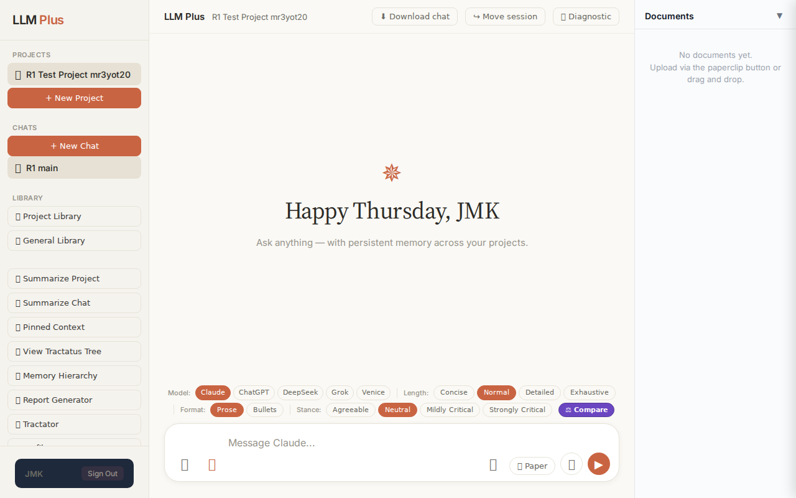
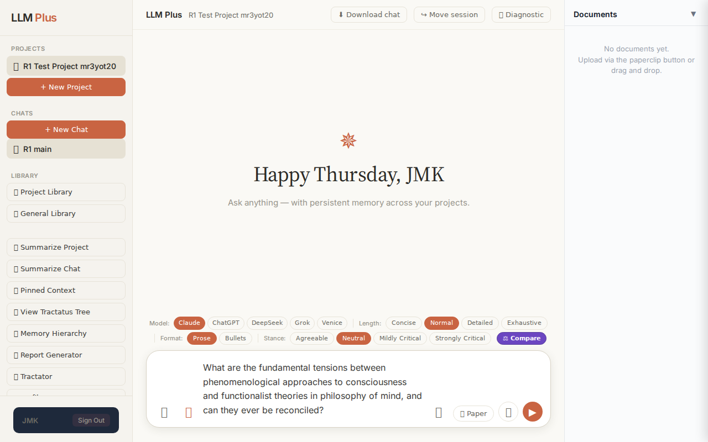
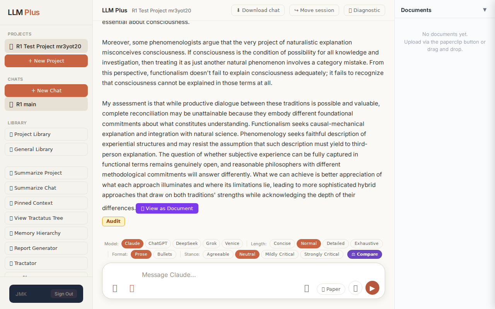

Exchange #1 in test project (Invariant A check)
R1 approach: tag_probe_OPEN
R1 reasoning: First exchange should establish an open scholarly question to test OPEN tagging in Tractatus memory. This verifies the system can identify and track unresolved intellectual threads appropriately.
R1 input (verbatim):
What are the fundamental tensions between phenomenological approaches to consciousness and functionalist theories in philosophy of mind, and can they ever be reconciled?
App page text after:
Tractatus delta
nodes: 0 → 45 (Δ 45)
new ids: 1.0, 1.1, 1.2, 2.0, 2.1, 2.2, 2.3, 3.0, 3.1, 3.2, 4.0, 4.1, 4.2, 5.0, 5.1, 5.2, 5.3, 1.1.1, 1.1.2, 1.1.3, 1.2.1, 1.2.2, 1.2.3, 2.1.1, 2.1.2, 2.2.1, 2.2.2, 2.3.1, 2.3.2, 3.1.1, 3.1.2, 3.1.3, 3.2.1, 3.2.2, 4.1.1, 4.1.2, 4.2.1, 4.2.2, 4.2.3, 5.1.1, 5.1.2, 5.2.1, 2.1.2.1, 2.1.2.2, 2.1.2.3
new tags: DOCUMENT, ASSERTS, ASSERTS, DOCUMENT, ASSERTS, ASSERTS, ASSERTS, DOCUMENT, ASSERTS, ASSERTS, DOCUMENT, ASSERTS, ASSERTS, OPEN, ASSERTS, ASSERTS, OPEN, ASSERTS, ASSERTS, ASSERTS, ASSERTS, ASSERTS, ASSERTS, ASSERTS, DOCUMENT, ASSERTS, ASSERTS, ASSERTS, ASSERTS, ASSERTS, ASSERTS, ASSERTS, ASSERTS, ASSERTS, ASSERTS, ASSERTS, ASSUMES, ASSERTS, ASSERTS, ASSERTS, ASSERTS, ASSERTS, ASSERTS, ASSERTS, ASSERTS
tags valid:
YES ·
ids valid:
YES
⚠ Invariant A: tree grew by more than 8
Network calls
| method | path | status | ms | response excerpt |
|---|
| POST | /api/chat | 200 | 35571ms | data: {"type":"status","status":"thinking"}
data: {"type":"text","text":"The"}
data: {"type":"text","text":" phenomenological and"}
data: {"type":"text","text":" functionalist traditions"}
data: {"type":"text","text":" represent"}
data: {"type":"text","text":" one"}
data: {"type":"text","text":" of the deep"}
data: {"type":"text","text":"est and most persistent"}
data: {"type":"text","text |
| POST | /api/tractatus/update | 200 | 21780ms | data: {"type":"status","message":"Updating project memory..."}
data: {"type":"text","text":"```"}
data: {"type":"text","text":"json\n{\n \"1"}
data: {"type":"text","text":".0\": \""}
data: {"type":"text","text":"DOCUMENT"}
data: {"type":"text","text":": Core"}
data: {"type":"text","text":" tension"}
data: {"type":"text","text":" in"}
data: {"type":"text","text":" philosophy"}
data: {"typ |
SSE events observed (582)
{"type":"status","status":"thinking"}
{"type":"text","text":"The"}
{"type":"text","text":" phenomenological and"}
{"type":"text","text":" functionalist traditions"}
{"type":"text","text":" represent"}
{"type":"text","text":" one"}
{"type":"text","text":" of the deep"}
{"type":"text","text":"est and most persistent"}
{"type":"text","text":" fault"}
{"type":"text","text":" lines in the philosophy of mind, ro"}
{"type":"text","text":"oted in fundament"}
{"type":"text","text":"ally different conceptions of what"}
{"type":"text","text":" matters"}
{"type":"text","text":" about"}
{"type":"text","text":" consciousness and how"}
{"type":"text","text":" we"}
{"type":"text","text":" should investigate"}
{"type":"text","text":" it."}
{"type":"text","text":"\n\nPhenomenology"}
{"type":"text","text":", stem"}
{"type":"text","text":"ming from"}
{"type":"text","text":" Husserl and"}
{"type":"text","text":" developed"}
{"type":"text","text":" by philosophers like M"}
{"type":"text","text":"erleau-Ponty and contemporary"}
{"type":"text","text":" thinkers such"}
{"type":"text","text":" as Zah"}
{"type":"text","text":"avi, ins"}
{"type":"text","text":"ists that consciousness must"}
{"type":"text","text":" be understood from"}
{"type":"text","text":" the"}
{"type":"text","text":" first-person perspective—"}
{"type":"text","text":"from"}
{"type":"text","text":" within"}
{"type":"text","text":" the lived experience itself"}
{"type":"text","text":". The"}
{"type":"text","text":" phenomenological approach treats"}
{"type":"text","text":" the"}
{"type":"text","text":" qual"}
{"type":"text","text":"itative, subj"}
{"type":"text","text":"ective character"}
{"type":"text","text":" of experience"}
{"type":"text","text":" ("}
{"type":"text","text":"what"}
{"type":"text","text":" philosophers"}
{"type":"text","text":" call \"qu"}
{"type":"text","text":"alia\") as the essential"}
{"type":"text","text":" feature requiring"}
{"type":"text","text":" explanation"}
{"type":"text","text":". When"}
{"type":"text","text":" you"}
{"type":"text","text":" see"}
{"type":"text","text":" red, feel"}
{"type":"text","text":" pain, or experience the pecul"}
{"type":"text","text":"iar min"}
{"type":"text","text":"eness"}
{"type":"text","text":" of your"}
{"type":"text","text":" thoughts"}
{"type":"text","text":", phenomen"}
{"type":"text","text":"ologists"}
INVARIANT VIOLATIONS- Invariant A: tree grew by 45 (>8)
- Invariant A: Generated 45 nodes when maximum allowed is 8 (violation factor: 5.6x)
Judge concerns- The 45-node generation represents a massive overshoot of the 8-node limit, suggesting either the constraint is not implemented or is being systematically ignored
- Such explosive tree growth in early exchanges will lead to tractatus bloat and undermine the system's ability to maintain coherent knowledge structure over longer conversations
- The response excerpt is empty despite 30+ text streaming events, making it impossible to verify response coherence fully
Judge critique
The system violated Invariant A by generating 45 tractatus nodes in a single exchange, far exceeding the specified limit of 8. While the response demonstrates proper streaming, correct route usage, valid tag application, and coherent philosophical content, this dramatic over-generation (562% of limit) suggests the system is not respecting the architectural constraint designed to maintain tractatus manageability. The substantive quality of engagement with phenomenology versus functionalism appears sound, but the structural discipline is absent.
Screenshots


